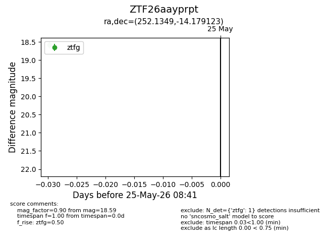
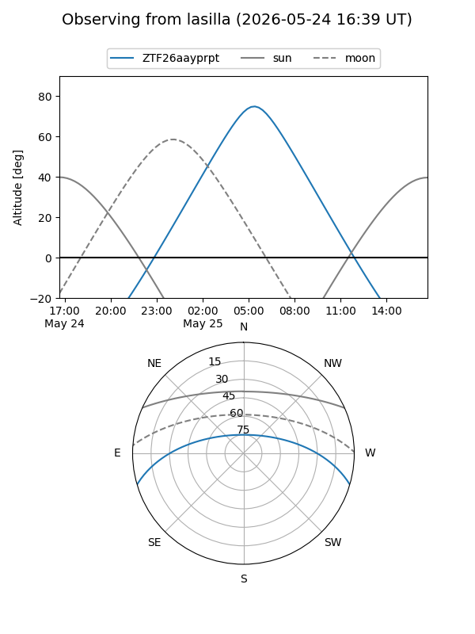
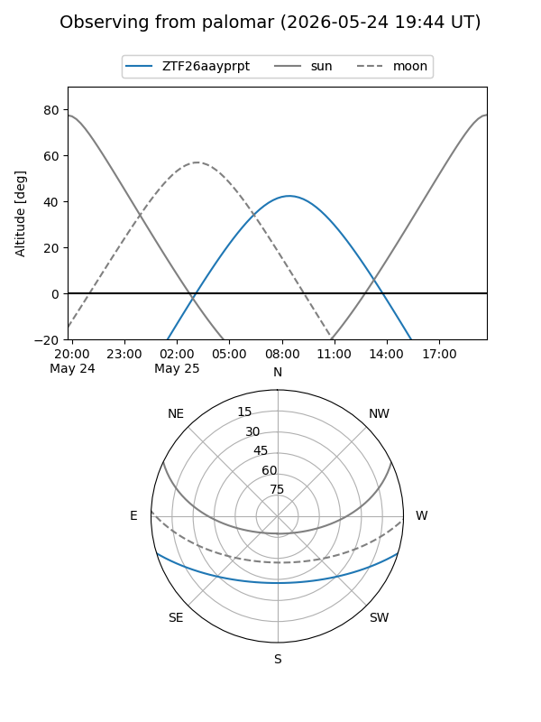

ZTF26aayprpt
Target ZTF26aayprpt at 2026-05-25 08:42
Aliases and brokers:
lsst-FINK: link
lsst-Lasair: link
lsst-ALeRCE: link
ztf-FINK: link
ztf-Lasair: link
ztf-ALeRCE: link
alt names
ZTF26aayprpt (ztf,fink_ztf)
Coordinates:
equatorial (ra, dec) = 252.1349,-14.17912
equatorial (HMS+DMS) = 16:48:32.37,-14:10:44.84
galactic (l, b) = (4.8930,+19.21767)
Flags:
Photometry:
last ztfg=18.59
1 ztfg detections
Lightcurve

Visibility


Additional plots